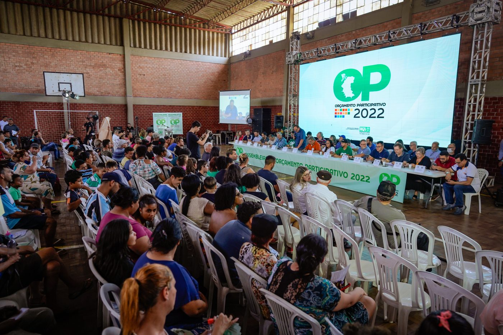

<!DOCTYPE html>
<html lang="es">
<head>
<meta charset="UTF-8">
<meta name="viewport" content="width=device-width, initial-scale=1.0">
<title>Evaluación Unidad III — El caso de Porto Alegre</title>
<style>
  * { box-sizing: border-box; margin: 0; padding: 0; }
  body { font-family: system-ui, -apple-system, "Segoe UI", Arial, sans-serif;
         background: #faf9f6;
         background-image: radial-gradient(1200px 600px at 80% -10%, #eef2ff 0%, rgba(238,242,255,0) 60%),
                           radial-gradient(900px 500px at -10% 110%, #fdf6e3 0%, rgba(253,246,227,0) 55%);
         color: #1c1917; line-height: 1.6; }
  .wrap { max-width: 920px; margin: 0 auto; padding: 30px 24px 56px; }
  .progress { font-size: 16px; font-weight: 600; color: #78716c; letter-spacing: .04em; margin-bottom: 12px; }
  .bar { height: 6px; background: #e7e5e4; border-radius: 99px; overflow: hidden; margin-bottom: 30px; }
  .bar > div { height: 100%; background: linear-gradient(90deg, #1d4ed8, #3b82f6); width: 0%; transition: width .5s cubic-bezier(.22,1,.36,1); }
  h1 { font-family: Georgia, "Times New Roman", serif; font-size: 46px; line-height: 1.12; margin-bottom: 12px; letter-spacing: -0.01em; }
  h2 { font-family: Georgia, "Times New Roman", serif; font-size: 33px; line-height: 1.2; margin-bottom: 18px; }
  .kicker { font-size: 16px; font-weight: 700; color: #1d4ed8; text-transform: uppercase; letter-spacing: .1em; margin-bottom: 10px; }
  p, li { font-size: 22px; margin-bottom: 14px; }
  .card { background: #ffffff; border: 1px solid #ece9e6; border-radius: 20px;
          padding: 28px 30px; margin-bottom: 18px; box-shadow: 0 12px 32px rgba(28,25,23,.06); }
  .momento { font-size: 22px; }
  .motif { margin-bottom: 16px; }
  .photo { margin-bottom: 20px; }
  .photo img { width: 100%; aspect-ratio: 16/9; object-fit: cover; object-position: center;
                border-radius: 20px; display: block; box-shadow: 0 12px 32px rgba(28,25,23,.10); }
  .photo figcaption { font-size: 15px; color: #78716c; margin-top: 8px; }
  .opt { display: block; width: 100%; text-align: left; font-size: 21px;
         background: #ffffff; color: #1c1917; border: 2px solid #d6d3d1;
         border-radius: 14px; padding: 18px 20px; margin-bottom: 14px;
         cursor: pointer; min-height: 64px;
         transition: border-color .18s ease, transform .18s ease, box-shadow .18s ease, background .18s ease;
         box-shadow: 0 1px 2px rgba(28,25,23,.04); }
  .opt:hover { border-color: #1d4ed8; transform: translateY(-2px); box-shadow: 0 8px 20px rgba(29,78,216,.12); }
  .opt:active { transform: scale(.98); }
  .opt.sel { border-color: #1d4ed8; background: #eff6ff; font-weight: 600; box-shadow: 0 8px 20px rgba(29,78,216,.14); }
  .btnrow { display: flex; gap: 14px; margin-top: 24px; flex-wrap: wrap; }
  button.nav { font-size: 21px; font-weight: 700; border: none; border-radius: 14px;
               padding: 18px 30px; min-height: 64px; cursor: pointer;
               transition: transform .15s ease, box-shadow .15s ease, background .2s ease; }
  .next { background: #1d4ed8; color: #fff; }
  .next:hover { transform: translateY(-2px); box-shadow: 0 10px 24px rgba(29,78,216,.30); }
  .next:active, .back:active { transform: scale(.98); }
  .next:disabled { background: #9ca3af; cursor: default; transform: none; box-shadow: none; }
  .back { background: #e7e5e4; color: #1c1917; }
  .back:hover { transform: translateY(-2px); }
  .warn { background: #fffbeb; border: 1px solid #fde68a; border-radius: 14px;
          padding: 18px 20px; font-size: 20px; margin-bottom: 18px; }
  .hint { color: #b91c1c; font-size: 19px; font-weight: 600; min-height: 28px; margin-top: 6px; }
  .mapitem { border-bottom: 1px solid #e7e5e4; padding: 12px 0; }
  .mapitem:last-child { border-bottom: none; }
  .mapitem .q { font-size: 19px; color: #6b7280; margin-bottom: 2px; }
  .mapitem .a { font-size: 21px; font-weight: 600; margin-bottom: 0; }
  .rev { border-left: 6px solid #1d4ed8; padding: 4px 0 4px 18px; margin-bottom: 20px; }
  .rev h3 { font-size: 22px; margin-bottom: 4px; }
  .rev p { font-size: 21px; margin-bottom: 0; }
  .cmp { border: 1px solid #e7e5e4; border-radius: 14px; padding: 16px 20px; margin-bottom: 14px; background: #fff; }
  .cmp .q { font-size: 19px; color: #6b7280; margin-bottom: 6px; }
  .cmp .row { font-size: 21px; margin-bottom: 2px; }
  .ok { color: #15803d; font-weight: 700; }
  .no { color: #b91c1c; font-weight: 700; }
  .reveal-btn { background: #92400e; color: #fff; }
  .reveal-btn:hover { transform: translateY(-2px); box-shadow: 0 10px 24px rgba(146,64,14,.30); }
  @keyframes rise { from { opacity: 0; transform: translateY(16px); } to { opacity: 1; transform: translateY(0); } }
  @keyframes slideIn { from { opacity: 0; transform: translateX(28px); } to { opacity: 1; transform: translateX(0); } }
  @keyframes fadeScale { from { opacity: 0; transform: scale(.985); } to { opacity: 1; transform: scale(1); } }
  .screen-cover { animation: fadeScale .6s cubic-bezier(.22,1,.36,1) both; }
  .screen-moment { animation: slideIn .55s cubic-bezier(.22,1,.36,1) both; }
  .screen-write, .screen-close { animation: rise .5s cubic-bezier(.22,1,.36,1) both; }
  .screen-q { animation: fadeScale .4s ease both; }
  .screen-q .opt { animation: rise .45s cubic-bezier(.22,1,.36,1) both; }
  .screen-q .opt:nth-of-type(1) { animation-delay: 60ms; }
  .screen-q .opt:nth-of-type(2) { animation-delay: 130ms; }
  .screen-q .opt:nth-of-type(3) { animation-delay: 200ms; }
  .screen-q .opt:nth-of-type(4) { animation-delay: 270ms; }
  .screen-map { animation: fadeScale .4s ease both; }
  .screen-map .mapitem { animation: rise .45s cubic-bezier(.22,1,.36,1) both; }
  .screen-map .mapitem:nth-of-type(1) { animation-delay: 60ms; }
  .screen-map .mapitem:nth-of-type(2) { animation-delay: 120ms; }
  .screen-map .mapitem:nth-of-type(3) { animation-delay: 180ms; }
  .screen-map .mapitem:nth-of-type(4) { animation-delay: 240ms; }
  .screen-map .mapitem:nth-of-type(5) { animation-delay: 300ms; }
  .screen-map .mapitem:nth-of-type(6) { animation-delay: 360ms; }
  .screen-map .mapitem:nth-of-type(7) { animation-delay: 420ms; }
  .screen-reveal { animation: fadeScale .4s ease both; }
  .screen-reveal .rev, .screen-reveal .cmp { animation: rise .5s cubic-bezier(.22,1,.36,1) both; }
  @media (prefers-reduced-motion: reduce) {
    .screen-cover, .screen-moment, .screen-write, .screen-close, .screen-q,
    .screen-q .opt, .screen-map, .screen-map .mapitem, .screen-reveal .rev,
    .screen-reveal .cmp { animation: none; }
  }
  @media (max-width: 640px) {
    h1 { font-size: 32px; } h2 { font-size: 26px; }
    p, li { font-size: 20px; } .opt { font-size: 19px; }
    .wrap { padding: 20px 16px 40px; } .card { padding: 20px; }
  }
</style>
</head>
<body>
<div class="wrap" id="app"></div>
<script>
const MOMENTS = [
  { tag: "Momento 1 de 3 · El inicio",
    img: "momento1-convocatoria.jpg", alt: "Vecina hablando con micrófono en una asamblea del Presupuesto Participativo",
    cap: "Asamblea del OP, Porto Alegre. Foto: Banco de Imágenes, Prefeitura de Porto Alegre.",
    text: "Porto Alegre, Brasil, 1989. Un tercio de la población vive en zonas periféricas sin agua corriente ni alcantarillado. Un nuevo gobierno municipal decide que el presupuesto de inversión no se hará a puerta cerrada: convoca a los vecinos a discutir en qué gastar. En el primer año, 403 personas y 230 entidades participan en las convenciones regionales para proponer ideas al gobierno." },
  { tag: "Momento 2 de 3 · Las asambleas",
    img: "momento2-asamblea.jpg", alt: "Asamblea del Presupuesto Participativo con mesa de delegados y vecinos en el público",
    cap: "Asamblea del OP, Porto Alegre. Foto: Banco de Imágenes, Prefeitura de Porto Alegre.",
    text: "La ciudad se organiza en 16 regiones y en asambleas temáticas. En las asambleas de cada región, abiertas a cualquier residente, los vecinos discuten las necesidades de su barrio y votan cuáles son las prioridades: saneamiento, agua, pavimento, vivienda, educación, salud. Después eligen delegados que llevarán esas prioridades a las instancias siguientes." },
  { tag: "Momento 3 de 3 · Los delegados y los resultados",
    img: "momento3-delegados.jpg", alt: "Delegados en la mesa de una asamblea del Presupuesto Participativo",
    cap: "Asamblea del OP, Porto Alegre. Foto: Banco de Imágenes, Prefeitura de Porto Alegre.",
    text: "Los delegados electos forman el Consejo del Presupuesto Participativo. Allí, en reuniones semanales durante unos tres meses, negocian con el gobierno el Plan de Inversión: las obras concretas, la dependencia responsable y el monto. El gobierno fija el monto total disponible y el Concejo Municipal aprueba el presupuesto final. Con los años, la participación crece de cientos a decenas de miles: entre 1988 y 1997, los hogares con agua y alcantarillado pasan del 75% al 98%, y el alcantarillado pasa del 46% (1989) al 85% (1996)." }
];
const QUESTIONS = [
  { moment: 0, q: "¿Quiénes participan en este proceso?",
    opts: ["Solo los concejales y los técnicos del gobierno",
           "Cualquier vecino en asambleas abiertas de su región",
           "Solo los partidos políticos",
           "Solo los empresarios de la ciudad"], correct: 1 },
  { moment: 0, q: "¿Por qué canal participan los vecinos?",
    opts: ["Un canal creado por el propio gobierno municipal",
           "Una protesta espontánea en la calle",
           "Una elección presidencial",
           "Un canal privado de las empresas"], correct: 0 },
  { moment: 1, q: "En la asamblea, los vecinos discuten las necesidades del barrio y votan las prioridades. ¿Qué forma de participación es esa?",
    opts: ["Deliberación directa: discuten y votan prioridades",
           "Votar cada cuatro años por un alcalde",
           "Representación sin deliberación",
           "Participación por sorteo"], correct: 0 },
  { moment: 1, q: "¿Qué deciden de verdad los vecinos en la asamblea?",
    opts: ["Solo opinan; el gobierno decide después sin ninguna obligación",
           "Definen las prioridades que se negociarán para el presupuesto",
           "Eligen al alcalde de la ciudad",
           "Nada: la asamblea es solo informativa"], correct: 1 },
  { moment: 1, q: "Los vecinos que van a la asamblea, ¿qué buscan sobre todo?",
    opts: ["Que su barrio tenga obras concretas: agua, alcantarillado, pavimento",
           "Un cargo público para ellos mismos",
           "Que los escuchen sin que nada cambie",
           "Bajar los impuestos de la ciudad"], correct: 0 },
  { moment: 2, q: "Mirando el caso completo (asambleas que deliberan y votan, delegados que negocian en el Consejo), ¿qué modelo lo describe mejor?",
    opts: ["Solo representativo",
           "Solo directo",
           "Participativo con elementos de representación",
           "Clientelismo: el gobierno compra apoyos"], correct: 2 },
  { moment: 2, q: "¿Qué explica mejor que miles de vecinos se movilicen año tras año?",
    opts: ["Las organizaciones vecinales los convocan y organizan, con recursos y motivación (voluntarismo cívico)",
           "La ley obliga a todos los vecinos a asistir",
           "Les pagan por asistir a las asambleas",
           "La televisión los convence a todos por igual"], correct: 0 }
];
const REALITY = [
  { t: "Quiénes participan", d: "Vecinos de los barrios, organizados en asociaciones, delegados electos y el gobierno municipal." },
  { t: "Formas de participación", d: "Deliberación directa en las asambleas y representación a través de los delegados y el Consejo del Presupuesto Participativo." },
  { t: "Canal", d: "Institucional, creado por el gobierno municipal en 1989." },
  { t: "Qué deciden de verdad", d: "Las prioridades de inversión, que se negocian en el Consejo y se ejecutan en alrededor del 97% de los proyectos (1992-1999). El gobierno fija el monto total y el Concejo Municipal aprueba el presupuesto final." },
  { t: "Modelo", d: "Participativo con elementos de representación." },
  { t: "Teoría", d: "Voluntarismo cívico (las redes vecinales reclutan, con recursos y motivación) y democracia participativa (participar forma ciudadanía y acerca las decisiones)." },
  { t: "Resultados", d: "Agua y alcantarillado del 75% (1988) al 98% (1997); alcantarillado del 46% (1989) al 85% (1996). El modelo se replicó en cientos de ciudades del mundo." }
];
// Flujo: portada, por cada momento: texto, preguntas, mapa; escritura; cierre; revelación
let flow = ["cover"];
MOMENTS.forEach((m, i) => {
  flow.push("moment" + i);
  QUESTIONS.forEach((q, qi) => { if (q.moment === i) flow.push("q" + qi); });
  flow.push("map" + i);
});
flow.push("write", "close", "reveal");
let step = 0, answers = {};
const app = document.getElementById("app");
function esc(s){ return s.replace(/&/g,"&amp;").replace(/</g,"&lt;"); }
function progressHTML(){
  const pct = Math.round(step / (flow.length - 1) * 100);
  return '<div class="progress">Paso ' + (step + 1) + ' de ' + flow.length + '</div>' +
         '<div class="bar"><div style="width:' + pct + '%"></div></div>';
}
function navHTML(back, nextLabel, nextDisabled){
  let h = '<div class="btnrow">';
  if (back) h += '<button class="nav back" onclick="go(-1)">Anterior</button>';
  h += '<button class="nav next" ' + (nextDisabled ? 'disabled' : '') + ' onclick="go(1)">' + nextLabel + '</button>';
  return h + '</div>';
}
function render(){
  const key = flow[step];
  app.className = "wrap " + (key === "cover" ? "screen-cover"
    : key.startsWith("moment") ? "screen-moment"
    : key.startsWith("q") ? "screen-q"
    : key.startsWith("map") ? "screen-map"
    : key === "write" ? "screen-write"
    : key === "close" ? "screen-close" : "screen-reveal");
  let h = progressHTML();
  if (key === "cover"){
    h += '<figure class="photo"><figcaption>Asamblea del Presupuesto Participativo, Porto Alegre. Foto: Banco de Imágenes, Prefeitura de Porto Alegre.</figcaption></figure>' +
      '<div class="kicker">Evaluación · Unidad III · Sociología Política</div>' +
      '<h1>El presupuesto participativo de Porto Alegre</h1>' +
      '<div class="card"><p>Un caso real de participación política. Vas a recorrerlo en 3 momentos. En cada momento responderás preguntas eligiendo una opción.</p>' +
      '<p>La pantalla <strong>no te dirá si acertaste</strong>: tus respuestas se guardan y se revisan solo al final.</p></div>' +
      '<div class="btnrow"><button class="nav next" onclick="go(1)">Comenzar</button></div>';
  } else if (key.startsWith("moment")){
    const m = MOMENTS[+key.slice(6)];
    h += '<div class="kicker">' + esc(m.tag) + '</div><h2>Lee con atención</h2>' +
      '<figure class="photo"><figcaption>' + esc(m.cap) + '</figcaption></figure>' +
      '<div class="card momento"><p>' + esc(m.text) + '</p></div>' +
      navHTML(true, "Responder las preguntas");
  } else if (key.startsWith("q")){
    const qi = +key.slice(1), q = QUESTIONS[qi];
    h += '<div class="kicker">Momento ' + (q.moment + 1) + ' de 3 · Pregunta ' +
      (QUESTIONS.slice(0, qi + 1).filter(x => x.moment === q.moment).length) + ' de ' +
      QUESTIONS.filter(x => x.moment === q.moment).length + '</div>' +
      '<h2>' + esc(q.q) + '</h2><div id="opts">';
    q.opts.forEach((o, oi) => {
      h += '<button class="opt' + (answers[qi] === oi ? ' sel' : '') + '" onclick="pick(' + qi + ',' + oi + ')">' + esc(o) + '</button>';
    });
    h += '</div><div class="hint" id="hint"></div>' +
      navHTML(true, "Continuar", answers[qi] === undefined);
  } else if (key.startsWith("map")){
    const mi = +key.slice(3);
    const done = QUESTIONS.map((q, qi) => ({q, qi})).filter(x => x.q.moment <= mi && answers[x.qi] !== undefined);
    h += '<div class="kicker">Tu mapa hasta ahora</div><h2>Lo que marcaste</h2>' +
      '<div class="card">' + done.map(x =>
        '<div class="mapitem"><p class="q">' + esc(x.q.q) + '</p><p class="a">' + esc(x.q.opts[answers[x.qi]]) + '</p></div>'
      ).join("") + '</div>' +
      '<p>La pantalla no te dice cuáles están bien: eso se revisa al final.</p>' +
      navHTML(true, mi < 2 ? "Seguir al momento siguiente" : "Seguir a la escritura");
  } else if (key === "write"){
    h += '<div class="kicker">Respuesta escrita</div><h2>Ahora escribe tu respuesta</h2>' +
      '<div class="card"><p>1. ¿Qué modelo describe este caso y por qué?</p>' +
      '<p>2. ¿Qué teoría explica la participación que viste y por qué?</p>' +
      '<p>3. Sustenta tu respuesta con evidencia del caso: datos y hechos de los momentos.</p></div>' +
      navHTML(true, "Ya escribí mi respuesta");
  } else if (key === "close"){
    h += '<div class="kicker">Cierre oral</div><h2>Explica tu conclusión en 2 a 3 minutos</h2>' +
      '<div class="card"><p>Resume qué modelo es el caso, qué teoría lo explica y con qué evidencia.</p></div>' +
      '<div class="btnrow"><button class="nav back" onclick="go(-1)">Anterior</button>' +
      '<button class="nav reveal-btn" onclick="go(1)">Mostrar la realidad del caso (solo al final)</button></div>';
  } else if (key === "reveal"){
    h += '<div class="kicker">Cierre con el profesor</div><h2>La realidad del caso</h2>' +
      '<div class="warn">Esta pantalla se muestra solo al final, para comparar lo que marcaste con lo que el caso realmente muestra.</div>';
    REALITY.forEach(r => {
      h += '<div class="rev"><h3>' + esc(r.t) + '</h3><p>' + esc(r.d) + '</p></div>';
    });
    h += '<h2 style="margin-top:28px">Lo que marcaste frente a la realidad</h2>';
    QUESTIONS.forEach((q, qi) => {
      const mine = answers[qi], ok = mine === q.correct;
      h += '<div class="cmp"><p class="q">' + esc(q.q) + '</p>' +
        '<p class="row">Tú marcaste: ' + (mine === undefined ? "Sin respuesta" : esc(q.opts[mine])) + '</p>' +
        '<p class="row">La realidad: ' + esc(q.opts[q.correct]) + ' ' +
        '<span class="' + (ok ? 'ok' : 'no') + '">' + (ok ? '✓' : '✗') + '</span></p></div>';
    });
    h += '<div class="btnrow"><button class="nav back" onclick="go(-1)">Anterior</button></div>';
  }
  app.innerHTML = h;
  window.scrollTo(0, 0);
}
function pick(qi, oi){
  answers[qi] = oi;
  document.querySelectorAll(".opt").forEach((b, i) => b.classList.toggle("sel", i === oi));
  const nb = document.querySelector("button.nav.next");
  if (nb) nb.disabled = false;
}
function go(d){
  const key = flow[step];
  if (d === 1 && key.startsWith("q")){
    const qi = +key.slice(1);
    if (answers[qi] === undefined){
      document.getElementById("hint").textContent = "Elige una opción para continuar.";
      return;
    }
  }
  step = Math.min(Math.max(step + d, 0), flow.length - 1);
  render();
}
render();
</script>
</body>
</html>
